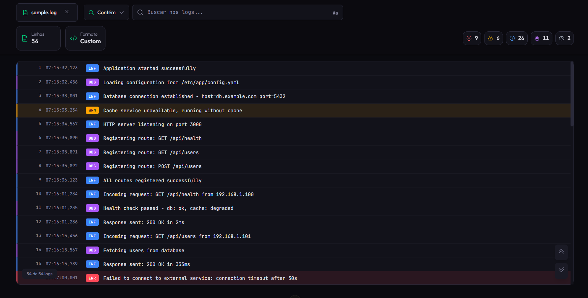

Log Viewer
Visualizador de logs web, simples e rápido. Sem backend, sem persistência, totalmente client-side e open source.

Features
📁 Multi-formato
Suporte a JSON, Apache, Nginx, Syslog e formatos customizados de log.
🔍 Busca Avançada
Busca por texto exato, regex, começa com, termina com e case sensitive.
🏷️ Filtro por Nível
Filtre rapidamente por ERROR, WARN, INFO, DEBUG e TRACE.
📊 Estatísticas
Visualize contagem de logs por nível em tempo real.
🚀 Performance
Processamento 100% client-side, sem necessidade de backend.
🌙 Dark Mode
Interface escura otimizada para longas sessões de análise.
Instalação
# Docker (Recomendado) docker run -d -p 3000:3000 ghcr.io/rtorreson/log-viewer:latest # Acesse http://localhost:3000 # Ou clone e rode localmente git clone https://github.com/rtorreson/log-viewer.git cd log-viewer npm install npm run dev